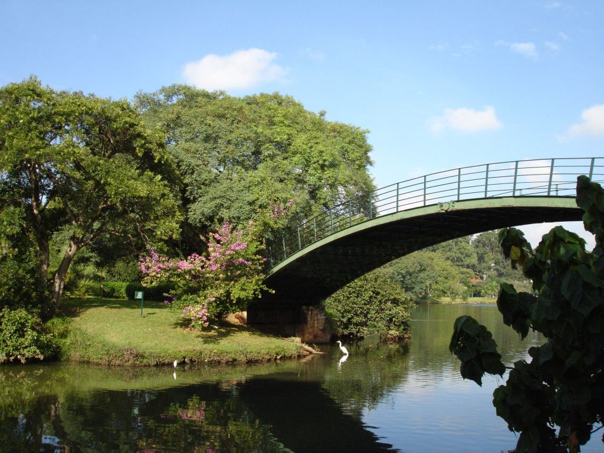

Passear na Avenida Paulista

Um dos principais centros financeiros da cidade, a avenida paulista também possui diveras opções de entretenimento. Endereço do Museu de Arte de São Paulo, do Teatro Gazeta e muitos outros na região, é de fácil acesso graças as diversas linhas de ônibus que cruzam a avenida e a linha de metrô que passa por de baixo dela.
Os bares da Vila Madalena

Depois de um dia de trabalho, nada melhor do que um bom chopp, um petísco e uma conversa em uma mesa de bar. Opções de sobra na região das ruas Aspicuelta, Fradique Coutinho e Wisad.
O parque do Ibirapuera
Um dos cartões postais da cidade, o parque dispõe de mais de 1,5km² de área verde, lagos artificiais e pistas de cooper e ciclismo. E se isso não fosse o suficiente, o parque costuma ser palco de diversos eventos culturais ao longo do ano.